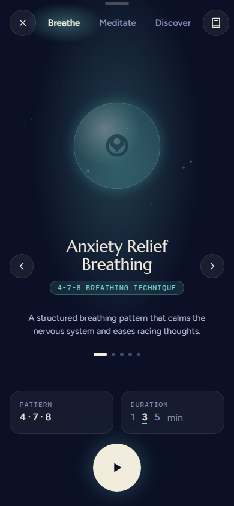
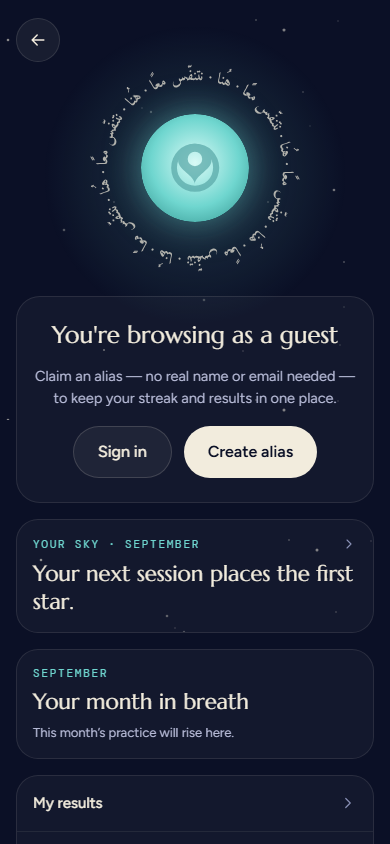
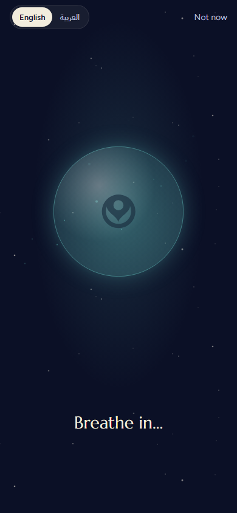
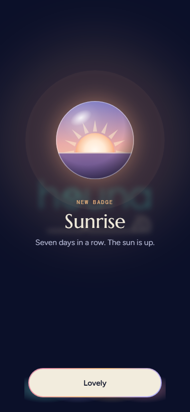
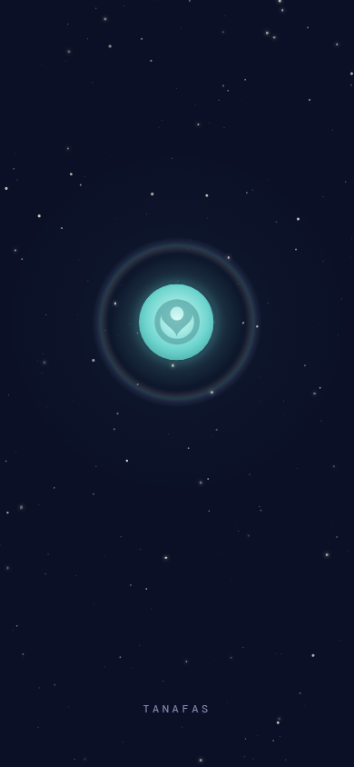
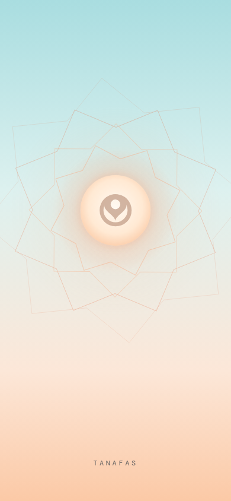
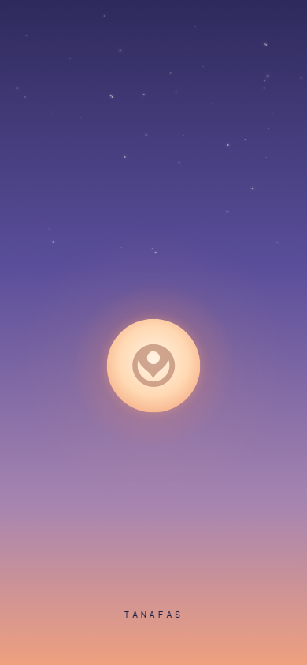

HomeThe anchor: the mark, or the body it rests in, 199 below the top (on a phone, 199 below the status bar).

199
243 · 44 lower
Tanafas · BreatheThe stage, and everything under it, up 44: more room above the play button. In a 4-7-8 session the mark stays put rather than lifting; the word sits a little lower in the orb.

199
168 · 31 higher
ProfileThe ring down 31: a little more air under the back button.

199
348 · 149 lower
The first breathThe orb up 149, the words just under it, Continue at the foot.

199
287 · 88 lower
A new badgeThe gem up 88; its words follow it.

199
354 · 155 lower
The starfieldThe moon glides from Home’s spot down to 354. The question below.

199
354 · 155 lower
The sunriseThe sun rises to 354 from below.

199
464 · 265 lower
The duskThe sun sets down to 464: lower, as a setting sun.
The ruleOne anchor: Home’s spot, 199 below the top of the screen (below the status bar on a phone). Wherever the mark is the centrepiece, the centre of the mark, or of the body, orb or gem it’s pressed into, sits on that line, horizontally centred. Sizes still differ (a small mark on Home, a large orb in 4-7-8); only the centre is shared, so moving between screens, it never jumps. The dashed teal line is the anchor; amber is where it sits today.
The scenes: a question1 · Stay on the anchor. The moon and suns grow where Home’s body was and stay there; the sky arrives round them. The mark never moves at all from Home to the scene and back.
2 · Keep their journey. They leave the anchor and settle lower as today (the moon and the rising sun at 354, the setting sun at 464), the scenes being the one place the mark travels, because the journey is the point of them.
Everything elseScreens without the mark (the Directory, Events, More, Stats, Recap, the journal) are unchanged. The splash, when it’s switched on, would rise to the anchor too.